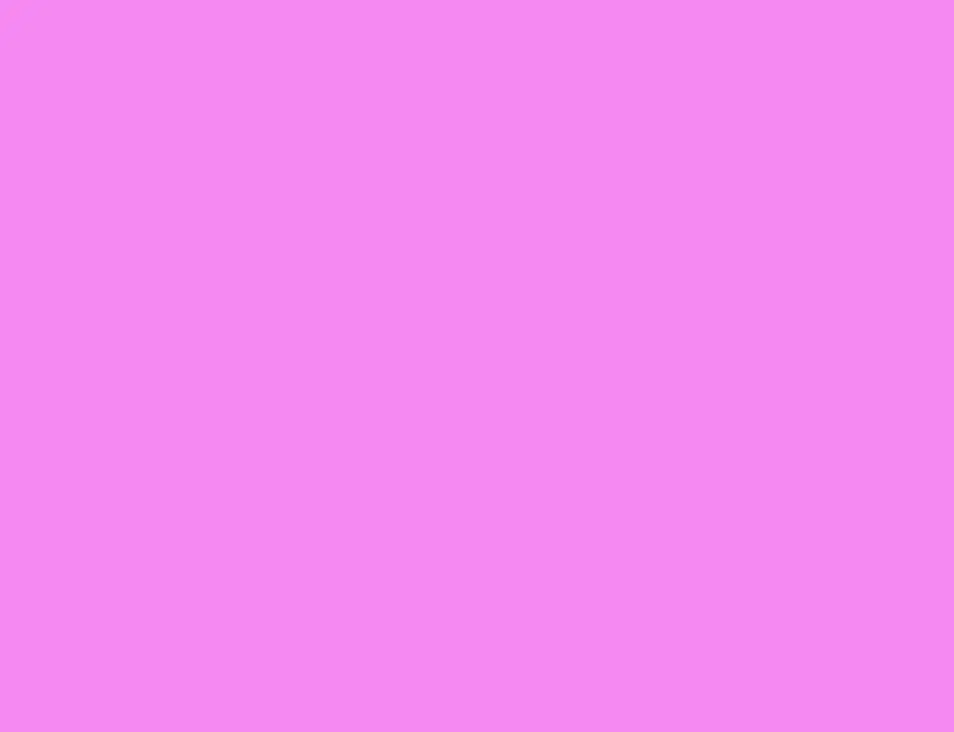
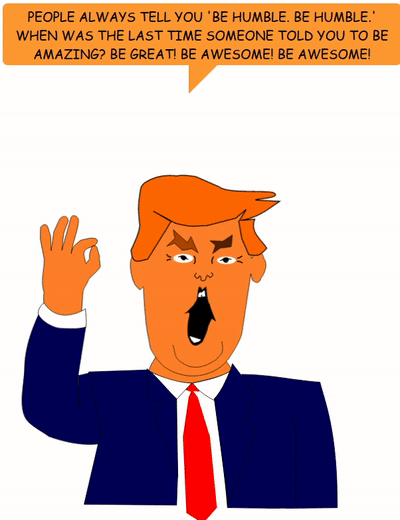
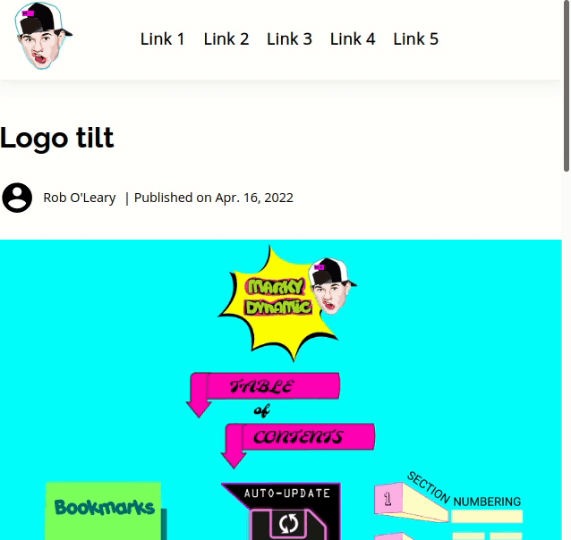
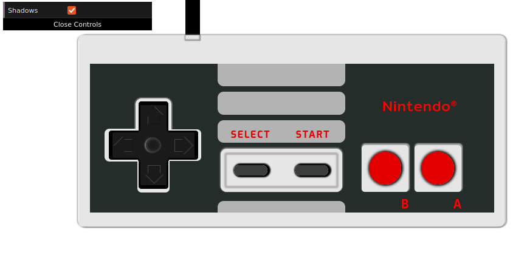
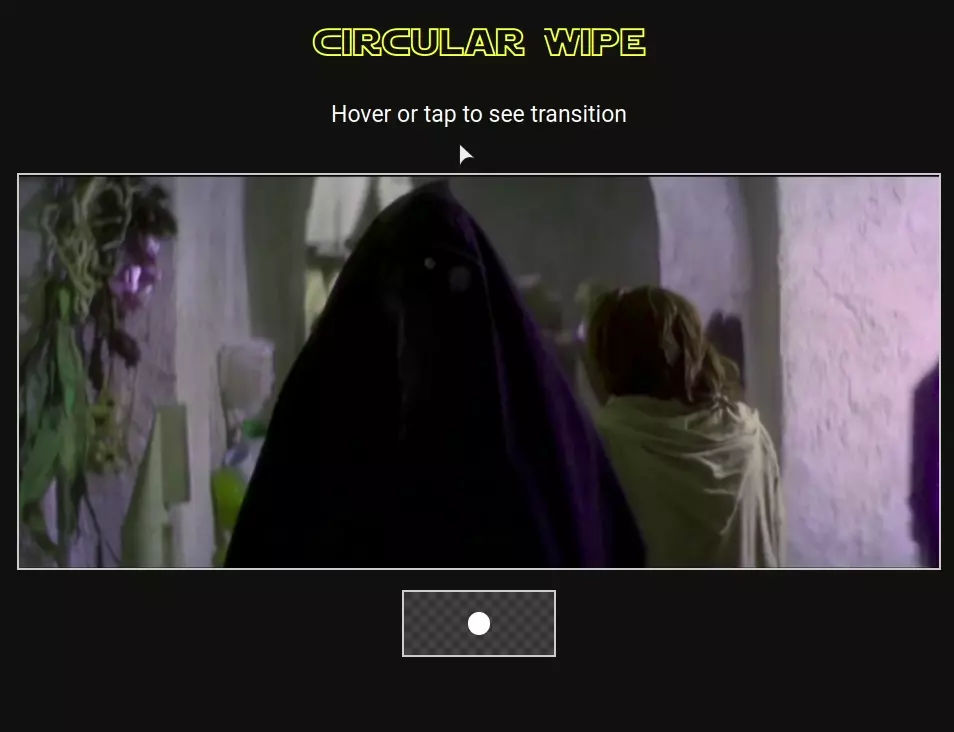
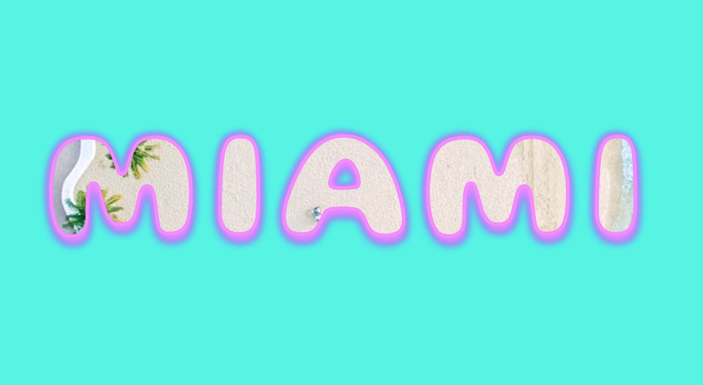

A diamond-shaped wipe reveal of text.
Check out the demo
Whimsical take on a product card for orange juice. On hover, it reveals the product with an animation.

Check out the demo.
Animation of Johnny Cash's arrest sheet being filled out.

Check out the demo.
A poster for a NWA concert.

Check out the demo.

Check out the demo.
Kitsch wordplay of the opening lines of Chamillionaires' song 'Ridin Dirty'.

Check out the demo
Recreation of this poster by Paul Rand.

Check out the demo

Check out the demo
Trump spitting quotes from Kanye. Quotes are fetched from the kanye.rest API.
Check out the demo
Created for an article - How to make an awesome horizontal parallax animation.

Check out the demo
This is a web rendition of the painting Black to White Disks by Bridget Riley.

Check out the demo

Check out the demo
Web rendition of the spot painting LSD by Damian Hirst.
Check out the demo
Check out the demo
3D hover effect to open a book and reveal a synopsis of the story. I wanted to try out creating realistic reflections.

Check out the demo
This an idea for a customisible Christmas decoration. It is like an accordian of cards. There are different designs on each side, you can fold them to create different combinations.

Check out the demo
I wanted to try out a goofy idea. I wanted to animate a website’s logo so that it would fall over when you scroll down, and right itself when you scroll up. In particular, I wanted the logo to be a head or have a cartoonish look.
I discuss the code behind it in my post, How to detect scroll direction in vanilla JavaScript (to make a goofy logo animation).
Check out the demo
Add short bursts of action (animation) to a graphic novel.

Check out the demo
This is a CSS recreation of a NES (Nintendo) game controller. It is an experiment to see the impact shadows can have on the realism of a design. You can toggle the shadows on/off to judge for yourself!
Check out the demo
CSS animation of the circulr wipe used for scene transitions in Star Wars.
Since the `mask` CSS property is not fully implemented across browsers, I looked for alternatives that have better support.
I created 2 versions:
clip-path version: The clip-path property is
the basis of the animation. The transition edges are hard. Check out the
demo
radial-gradient to the mask. Check out the
demo
Star Wars recruitment poster, sort of.

Check out the demo.
I wanted to see if I could create bubble text with a background image and a stroked outline. Kind of like fun grafitti.
Check out the demo.
I wanted to see if you can have content with a picture frame as a border. The border image will be enclose the content whatever the dimensions.
I used the border-image family of properties. I use
border-image-repeat: repeat; to handle when the width of the
content is greater than the border image width. This degrades the image
but it looks fine in this case.

Check out the demo.